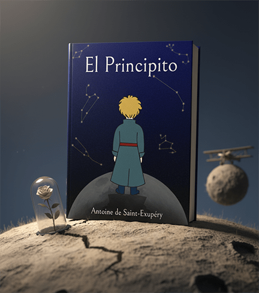
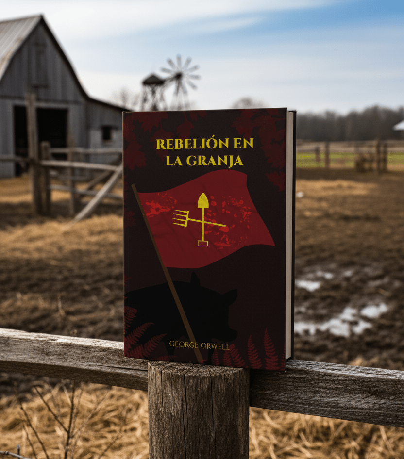
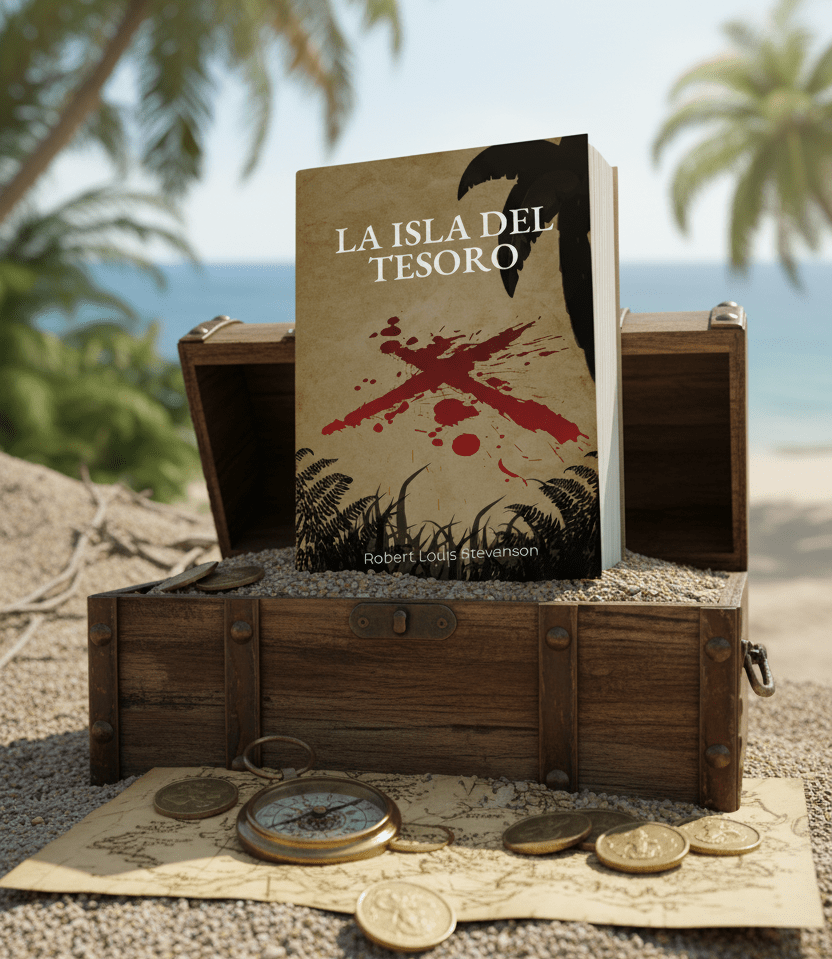
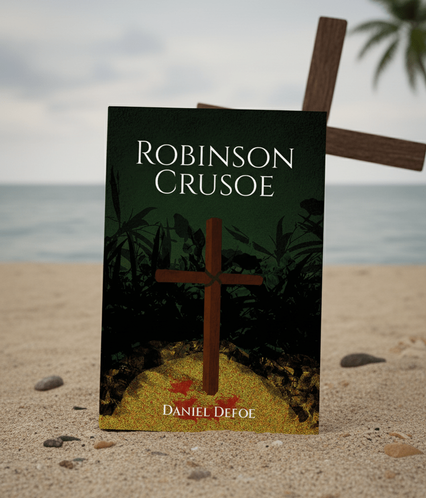
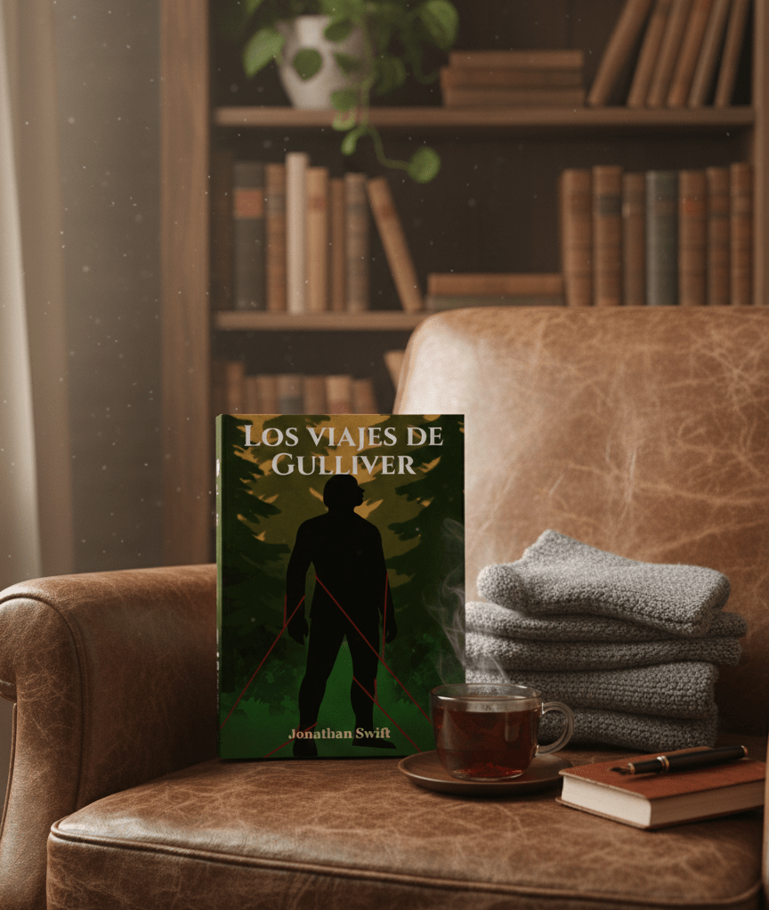
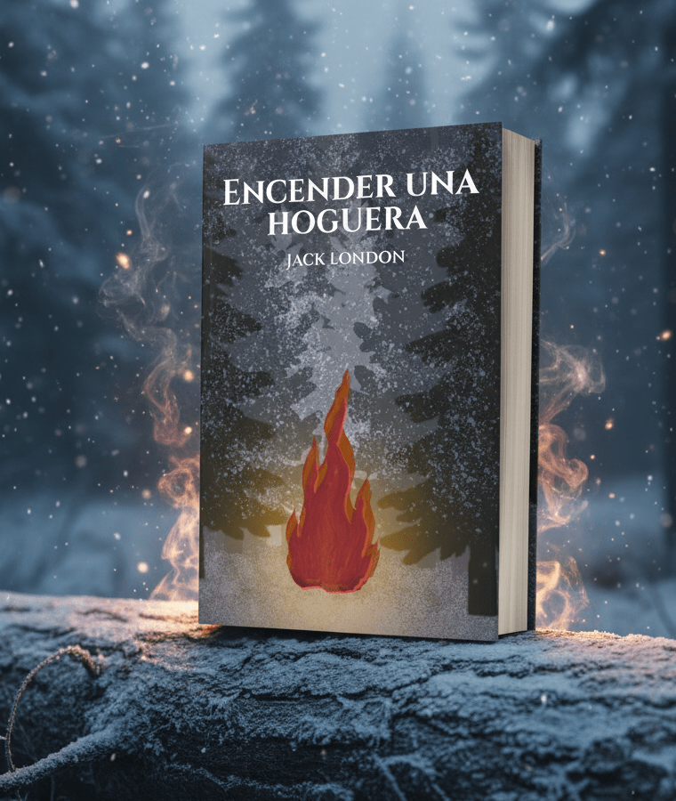

Proyectos

El principito de Antoine de Saint-Exupéry

El Señor de las moscas

Rebelión en la Granja

La isla del tesoro

Robinson Crusoe

Los viajes de Guilliver

Encender una hoguera
Esta serie de portadas reinterpreta grandes obras de la literatura clásica desde una mirada contemporánea.
El objetivo del proyecto es renovar la identidad visual de títulos icónicos sin perder su esencia original, explorando la relación entre texto, símbolo y emoción.
Cada diseño busca capturar el espíritu de la obra a través del color, la composición y la tipografía, utilizando recursos gráficos que dialogan con la narrativa y el contexto histórico del libro.
Las ilustraciones y elementos visuales fueron pensados para atraer al lector moderno, al mismo tiempo que rinden homenaje al legado cultural de los autores.
Entre los títulos representados se incluyen clásicos como El Señor de las moscas
de William Golding, Rebelión en la Granja de George Orwell, La Isla del Tesoro de Robert Louis Stevenson,
El principito de Antoine de Saint-Exupéry, Robinson Crusoe de Daniel Defoe, Los viajes de Gulliver de Jonathan Swift
y Encender una Hoguera de Jack London.
Cada portada plantea una lectura visual diferente, invitando a
redescubrir estas historias desde una nueva perspectiva estética.
Este proyecto combina diseño editorial, análisis literario y creatividad visual,
demostrando cómo los clásicos pueden seguir inspirando nuevas formas de expresión gráfica.
El principito de Antoine de Saint-Exupéry
El Señor de las moscas
Rebelión en la Granja
La isla del tesoro
Robinson Crusoe
Los viajes de Guilliver
Encender una hoguera